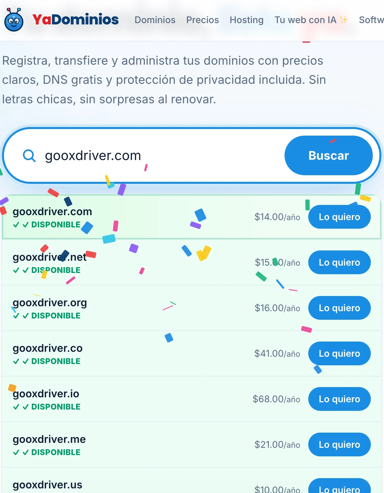

Una sola app para comida, motos, carros y envíos. El primer nombre, Goox, es la
marca que la gente va a decir. «driver» va pequeño, como apellido: nos diferencia en
Google y en las tiendas de apps y nos da el dominio.
gooxdriver.comDISPONIBLE
App StoreNINGUNA APP LLAMADA GOOX

Búsqueda del dominio en YaDominios, 21 oct 2026: gooxdriver.com, .net, .org, .co, .io, .me
y .us disponibles.
Goox Driver · propuesta de marca1
Revisión
Goox está libre: lo que revisamos
Antes de enamorarse de un nombre hay que saber si alguien ya lo usa. Esto es lo que
encontramos el 21 de octubre de 2026.
Dominio libregooxdriver.com, gooxdriver.net y gooxdriver.us, comprobados en el
registro oficial de cada dominio.
Libre en toda la App StoreNo existe ninguna app llamada Goox. Al escribir «goox» en
la App Store, la tienda solo sugiere otras palabras (goodreads, goodnotes, goodwill…), y
el buscador oficial de Apple no devuelve ninguna app ni ningún desarrollador con ese
nombre (21 oct 2026).
Sin empresas ni marcasNinguna empresa ni marca registrada llamada Goox en
buscadores y registros públicos de marcas. Lo más cercano es GOOVOX, de maquinaria.
Variantes para campañasgooxapp.com y getgoox.com también están libres.
Sin pegas en inglés ni en españolNo es una grosería ni tiene un significado malo en
los dos idiomas principales.
Se busca soloEs una palabra inventada: quien la busque en Google, nos encuentra a
nosotros.
Lo que falta antes de comprarlo
Que un abogado de marcas lo confirme en la oficina de marcas de EE. UU. (clases de
software, transporte, publicidad y restaurantes) y en Colombia; revisar Google Play;
asegurar los usuarios en Instagram, TikTok, Facebook y X; y comprar los dominios el mismo
día.
Goox Driver · propuesta de marca2
Diez logos
Los primeros diez caminos
Todos siguen la misma regla: Goox grande y driver pequeño, como apellido. Cada
uno trae su ícono de app al lado. Son propuestas para que el equipo de marketing elija un
camino y lo termine.
Gooxdriver
1. Dos ruedasLas dos «o» son las ruedas de una moto: movimiento y reparto.
Gooxdriver
2. Carita amableLas «o» son ojos: una marca cercana, que sonríe.
Gooxdriver
3. Cruce de caminosLa «x» es un cruce: conectamos restaurantes, gente y destinos.
Gooxdriver
4. Ruta infinitaLas «oo» forman un recorrido que no se corta.
Gooxdriver
5. VelocidadLetra inclinada y líneas de viento: llega rápido.
Gooxdriver
6. La cajaUn paquete: comida, mercado y envíos.
gooxdriver
7. MinimalistaEn minúsculas, limpio, de empresa de tecnología.
Gooxdriver
8. InsigniaUn sello redondo, para gorras, cascos y maletas de reparto.
Gooxdriver
9. CalleLetra alta y angosta, de cartel de carretera.
Gooxdriver
10. FlechaLa «G» que avanza: siempre en camino.
Logos de propuesta, diseñados para este documento · sin degradados, listos para una sola
tinta3
Treinta logos nuevos
Jugando con la X
La X es la letra más fuerte del nombre: cruce, flecha, encuentro, destino.
Gooxdriver
11. Cruce de avenidasDos avenidas que se cruzan, con su línea central: cada pedido es un punto de
encuentro.
Gooxdriver
12. Equis que avanzaUn brazo de la X termina en flecha: siempre hacia adelante.
Gooxdriver
13. Cuatro direccionesCuatro piezas que se encuentran en el centro: norte, sur, este y oeste.
Gooxdriver
14. Equis caladaLa X nace del espacio vacío entre cuatro bloques: limpia y muy reconocible.
Gooxdriver
15. Cubiertos cruzadosTenedor y cuchillo forman la X: la comida está en el centro.
Gooxdriver
16. X marca el destinoEl pin del mapa lleva una X por dentro: «aquí te lo llevamos».
Gooxdriver
17. EncuentroDos flechas que se miran y se tocan: el repartidor y tú se encuentran.
Gooxdriver
18. Cinta entrelazadaDos cintas que pasan una por encima de la otra: comida y viajes unidos.
Goox Driver · propuesta de marca4
Treinta logos nuevos
Jugando con las dos «o»
Faros, ojos, origen y destino, ruedas. Ninguno usa el ocho acostado, que ya es de Meta.
Gooxdriver
19. Faros encendidosLas dos «o» son los faros de un carro que viene hacia ti.
Gooxdriver
20. Miran hacia adelanteDos ojos con la mirada a la derecha: la app siempre va un paso adelante.
Gooxdriver
21. De aquí hasta alláLas dos «o» son el origen y el destino, unidos por el camino.
Gooxdriver
22. VelocímetroUna «o» se vuelve tablero: rapidez medida, no promesa.
Gooxdriver
23. Llanta GUna rueda con un corte que dibuja la G de Goox.
Gooxdriver
24. Eclipse en marchaUna «o» llena alcanza a la otra: movimiento sin perder la forma.
Gooxdriver
25. Ya va en caminoUna burbuja de chat con dos puntos: «tu pedido viene en camino».
Gooxdriver
26. Asas de la bolsaLas dos «o» son las asas de la bolsa de reparto.
Goox Driver · propuesta de marca5
Treinta logos nuevos
Jugando con la G
Monogramas para el ícono de la app.
Gooxdriver
27. G de carreteraLa G dibujada como una vía, con su línea central.
Gooxdriver
28. G con destinoEl trazo de la G termina en un punto de entrega.
Gooxdriver
29. G geométricaTres piezas de círculo y un cuadrado: una G moderna, de taller de diseño.
Gooxdriver
30. G y X juntasLa G abraza a la X: las dos letras que hacen la marca.
Gooxdriver
31. G de esquinasUna G cuadrada con la esquina cortada en diagonal, como una señal de tránsito.
Jugando con la palabra
La palabra misma como logo: la X que es flecha, las «o» que son puntos.
GooDRIVER
32. La X es flechaEn la palabra, la X apunta hacia arriba y a la derecha.
GxDRIVER
33. Puntos de colorLas dos «o» se vuelven puntos llenos: el pedido y su destino.
GooxDRIVER
34. Cortada por el vientoLetras gruesas atravesadas por líneas de velocidad.
GO OXDRIVER
35. En bloqueGO arriba, OX abajo: un cuadrado que se lee de un vistazo y dice «go».
GooxDRIVER
36. Doble o en rutaLas dos «o» se unen por debajo con un camino punteado.
Goox Driver · propuesta de marca6
Treinta logos nuevos
Sellos y personajes
Para gorras, cascos, maletas de reparto y redes.
Gooxdriver
37. La bolsa simpáticaLa bolsa de reparto con ojos: el personaje de la marca.
Gooxdriver
38. El cascoEl visor del casco dibuja las dos «o»: motos y repartidores.
Gooxdriver
39. Sello de calidadUn sello redondo con la X en el centro, para cascos, gorras y maletas.
Gooxdriver
40. El mapa del tesoroUn mapa doblado donde la X marca el lugar: tu puerta.
Goox Driver · propuesta de marca7
Nuestros favoritos
Tres caminos, en grande
Sobre fondo claro, sobre fondo oscuro (de noche, en la app y en las maletas) y como ícono en
la pantalla del celular.
Gooxdriver
Gooxdriver
Equis que avanza
Gooxdriver
Gooxdriver
De aquí hasta allá
Gooxdriver
Gooxdriver
El mapa del tesoro
Goox Driver · propuesta de marca8
Ventajas
Por qué Goox Driver
Lo que el nombre le da a la empresa desde el primer día.
Único
No encontramos ninguna app, empresa ni marca llamada Goox (App Store de EE. UU.,
buscadores web y registros de marcas, 21 oct 2026).
Dominio libre
gooxdriver.com está libre, y también gooxdriver.net, gooxdriver.us, gooxapp.com y
getgoox.com, para campañas.
Cuatro letras
Corto como las grandes marcas: se lee de un vistazo en un ícono, una gorra o una maleta
de reparto.
Suena a «go»
En inglés «go» es ir. Goox suena a movimiento, sirve igual para comida, motos, carros y
envíos.
Fácil de diseñar
La doble o se presta para ruedas, ojos o una ruta; la equis, para un cruce de caminos.
Cero competencia en búsquedas
Hoy nadie compite por esa palabra en las tiendas ni en Google: cuando publiquemos,
salimos primero.
Funciona en todo el mundo
Se pronuncia casi igual en los idiomas más hablados y no tiene un significado malo en
inglés ni en español.
Marca registrable
Al ser una palabra inventada, es más fácil de registrar y de proteger que una palabra
común como «Bite» o «Good».
A tener en cuenta
goox.com, sin «driver», ya tiene dueño: por eso la marca va con «driver» como apellido
en el dominio y en el nombre largo de las tiendas.
En inglés «goo» es una sustancia pegajosa; en la marca casi nadie lo asocia, pero el
diseño debe verse limpio y rápido, no blando.
Suena un poco a Google: es bueno para recordarlo, y hay que cuidar que el logo no se
parezca al de Google en colores ni en forma.
Falta que un abogado de marcas lo confirme en la oficina de marcas de EE. UU. y revisar
Google Play y los usuarios en redes.
Goox Driver · propuesta de marca9
Pronunciación
Cómo se dice Goox en los idiomas más hablados
La marca se dice «gúks»: una sola sílaba, con u larga, como la «oo» de Google. Así se
adapta en cada idioma (aproximado).
Idioma
Se dice
Nota
Inglés
gúks
como «goose» con una equis al final; rima con «books» alargando la u
Español
gúks
la doble o se dice «u», como en Google; dos letras para enseñar una vez
Portugués
gúks
igual que en inglés; en Brasil Google se dice «gúgol»
Francés
gúks
se escribe «gouks» al decirlo; muy natural
Italiano
gúks
sin cambios; la equis final suena firme
Alemán
gúks
en alemán la doble o se leería «oo» largo; en marca se adopta «gúks», como Google
Chino mandarín
gǔ kè sī · 古克斯
tres sílabas aproximadas, como se adaptan las marcas extranjeras
Japonés
gūkusu · グークス
adaptación al silabario katakana
Árabe
ghūks · غوكس
sonido parecido, se lee de derecha a izquierda
Hindi
gūks · गूक्स
una sílaba larga, fácil
Ruso
guks · Гукс
corto y directo
«driver» se dice «dráiver» en todos los idiomas: es una palabra del inglés que el
mundo ya conoce.
Goox Driver · propuesta de marca10
Cómo se usa
El nombre en la vida real
Cómo se escribe
La marca (ícono, publicidad, conversación)
Goox
Logo completo
Goox con driver pequeño
Dominio
gooxdriver.com
Nombre largo en las tiendas
Goox Driver: Food, Rides & Delivery
Apps
Goox (cliente), Goox Driver (repartidor), Goox for Restaurants
Redes
@gooxdriver
Cómo lo dice la gente
«Pídelo por Goox». «Llegó el Goox». «¿Vas en Goox?». Cuatro letras que se vuelven verbo,
como pasó con las grandes.
Siguientes pasos
1. El equipo elige uno de los diez caminos de logo. 2. Abogado de marcas. 3. Comprar los
dominios y los usuarios en redes el mismo día. 4. Abrir las cuentas de Apple y Google
Play con el nombre definitivo. 5. Cambiar la marca en las apps, la web y Docs, pasando
por el sitio de pruebas.